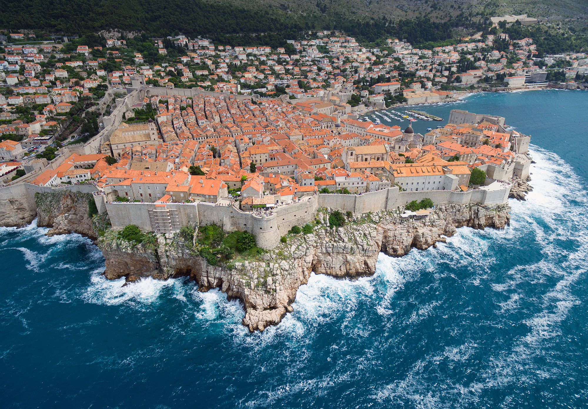
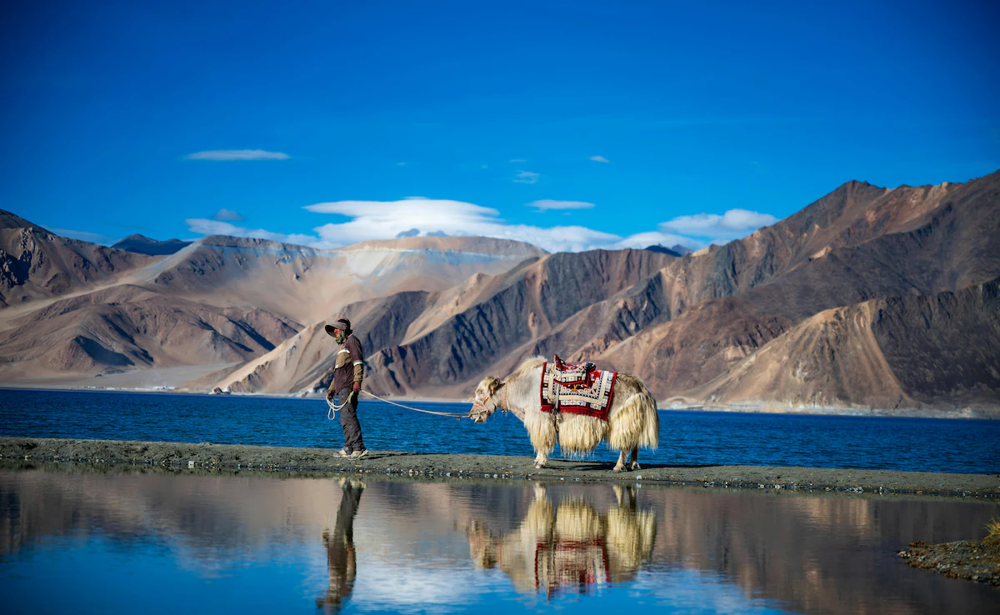
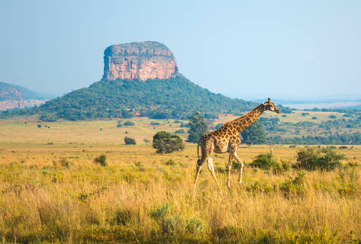

Best Road Trip Destinations
Road trips are one of the most exciting ways to explore the world. These destinations are known for their scenic beauty, culture, and unforgettable driving experiences.

Spain
Spain offers vibrant cities, beautiful beaches, and historic towns. A road trip from Malaga to Barcelona provides unforgettable views, delicious food, and rich cultural experiences.

Croatia
Croatia is famous for its Adriatic coastline, clear blue water, and charming villages. The drive from Zagreb to Dubrovnik is one of the most scenic routes in Europe.

Leh Ladakh, India
Leh Ladakh offers dramatic mountain landscapes and adventurous high-altitude roads. It is considered one of the most thrilling road trips in the world.
Cappadocia, Turkey
Cappadocia is known for its unique rock formations, cave dwellings, and hot air balloons. It is a dream destination for photographers and adventure lovers.

South Africa
South Africa combines coastal drives, wildlife safaris, and vibrant cities. A journey from Johannesburg to Cape Town offers diverse and unforgettable experiences.

Japan
Japan offers an unforgettable road trip experience with scenic mountain roads, peaceful countryside villages, and modern cities. Driving around Mount Fuji, Kyoto, and the Japanese Alps provides stunning views, cultural landmarks, and delicious local food.
Learn More
Explore more road trip ideas here: Best Road Trips in the World
Go back to the Home Page
Contact me: Send Email